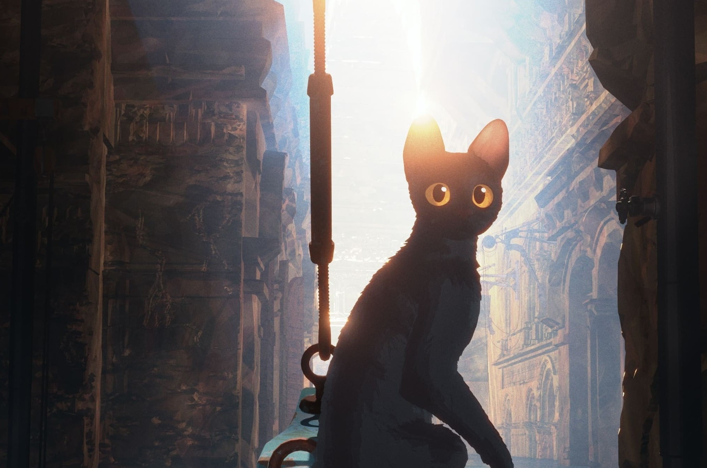

Scopri i film d'animazione
premiati agli Oscar
Troppo spesso i film animati vengono valutati con il pregiudizio che siano esclusivamente prodotti per famiglie pensati per i più piccoli. Questo sito è dedicato a una categoria ancora troppo trascurata degli Academy Awards, dando spazio non solo ai vincitori ma a tutti i candidati, nella speranza di farti scoprire qualcosa di unico e inaspettato.
L'animazione è cinema e basta, non una sua forma minore. E non è neanche vero che sia un genere per bambini. È arte e basta. - Guillermo del Toro
Film candidati al premio Oscar 2026
Breve storia dell'animazione al cinema
La storia dell'animazione, il metodo per creare immagini in movimento a partire da immagini statiche, ha avuto inizio con l'avvento della pellicola di celluloide nel 1888. Tra il 1895 e il 1920, durante l'ascesa dell'industria cinematografica, vennero sviluppate o reinventate diverse tecniche di animazione, tra cui la stop-motion con oggetti, marionette, plastilina o ritagli di carta, e l'animazione disegnata o dipinta. L'animazione a mano, che consisteva principalmente in una successione di immagini statiche dipinte su fogli di acetato, è stata la tecnica dominante del XX secolo ed è diventata nota come animazione tradizionale.